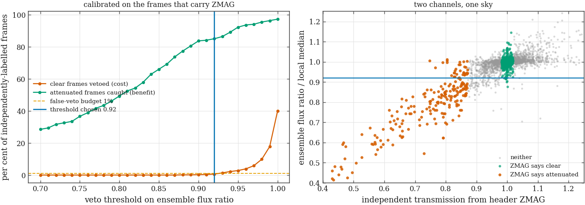
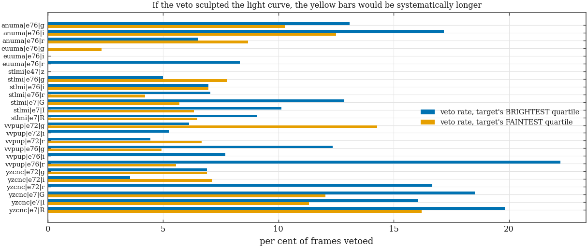
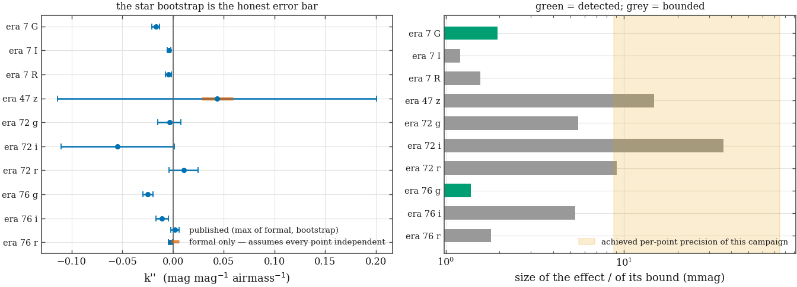
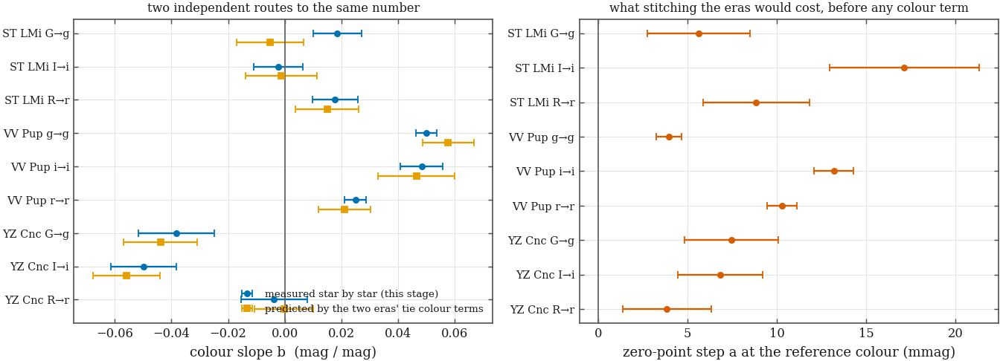
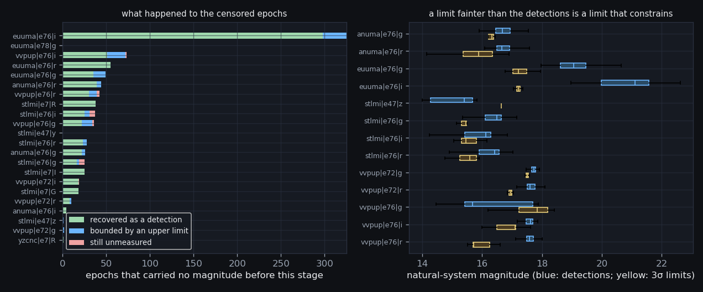

The cloud veto that had to be built because ZMAG does not exist for the
polars · the colour-extinction terms measured rather than assumed
· the cross-era transformation published as metadata and applied to
nothing · the faint-phase epochs bounded instead of dropped
· 850 frames flagged, 111 upper limits ·
built 2026-08-20T04:31Z
(CV-S8 v1.0 (2026-08-19, Phase-2 completion),
commit f32d412-dirty)
· the catalogue tie this rests
on · the characterization
that set these thresholds ·
project hub ·
the front page
Phase 2 measured 3,174,618 light-curve rows across 27 solved (target, era, filter) series and tied them to ATLAS-REFCAT2. It also measured what it can actually do, and the answer is smaller than the strategy hoped: per-point precision runs 9–75 mmag depending on the series (CV-S5 characterization, precision at each target's own brightness), and chi² inflation runs 0.92–3.02. Every threshold on this page is set against those numbers, not against the ones the plan started with.
ZMAG) into every frame header, and the original cloud cut
leaned on it. Of the 7,780 CV frames this stage examined,
2,736 carry a usable one — and none of them are
Sloan-era polar frames. VV Pup: 0 of 1,353. EU UMa era 78: 0 of
208. For the polars the primary cloud channel cannot be ZMAG, so it has to
be the comparison ensemble's own summed flux. The 2,736 frames that
do carry ZMAG are not wasted, though: they are exactly what the new
channel's threshold is calibrated against.The four sections below each run Question → Evidence → Decision → Consequence, in that order, and refuse to state a decision before the evidence that carries it.
What does a cloud do to a differential light curve, and how would we know it happened, on frames that carry no independent record of the sky?
A Honeycutt ensemble is differential, so first order the answer is “nothing”: cloud dims the target and the comparison stars together and the ratio survives. Second order it is not nothing. A cloud that costs half a magnitude also costs half a magnitude of signal-to-noise on every star, drops the faint end of the ensemble below detection, and changes which stars the zero point is averaged over. The result is not a shifted point, it is a NOISIER point with a zero point computed from a different set of stars — and on a 14–18 point-per-cycle cadence, a handful of those is a spurious feature.
The channel the strategy assumed — the header ZMAG
— does not exist for the targets that need it most. So the veto has
to be built from the only thing measured on every frame by construction:
the comparison ensemble's own summed flux.
The statistic, then the calibration, then the census.
For every night of every series, the stars measured on at least 80% of that night's frames form a core ensemble (membership fixed, so that a cloud cannot shrink the sum by removing contributors as well as by dimming them). Each frame's statistic is the core's summed flux rate — flux per second, so that a night mixing 60 s and 240 s exposures is not read as a night mixing clear and cloudy sky — divided by the same subset's median. That ratio is then divided by its own running median over ±10 frames. Dividing by a running median rather than the night's median is what makes this a cloud detector instead of an airmass detector: extinction falls smoothly across a night and is already absorbed exactly by the ensemble zero point, while a cloud is a departure from the local normal on a timescale of minutes.

The two exemplar nights, chosen by the INDEPENDENT channel (the spread of the header zero point) so that the exemplars are not selected by the statistic being tested:
| series | night | frames | ZMAG MAD | ZMAG span | ratio MAD | worst ratio | vetoed | |
|---|---|---|---|---|---|---|---|---|
| CLEAR | YZ Cnc e72 g | 2024-05-02 | 51 | 0.033 | 0.253 | 0.0041 | 0.837 | 2 |
| CLOUDY | ST LMi e7 I | 2024-02-03 | 26 | 0.090 | 2.114 | 0.0576 | 0.201 | 5 |
The calibration table — the whole argument for the number, in one place:
| threshold | clear frames | of which vetoed | false-veto rate | attenuated frames | of which vetoed | recall | chosen |
|---|---|---|---|---|---|---|---|
| 0.85 | 823 | 0 | 0.00% | 221 | 146 | 66.1% | |
| 0.86 | 823 | 0 | 0.00% | 221 | 153 | 69.2% | |
| 0.87 | 823 | 0 | 0.00% | 221 | 163 | 73.8% | |
| 0.88 | 823 | 1 | 0.12% | 221 | 171 | 77.4% | |
| 0.89 | 823 | 1 | 0.12% | 221 | 178 | 80.5% | |
| 0.90 | 823 | 2 | 0.24% | 221 | 185 | 83.7% | |
| 0.91 | 823 | 3 | 0.36% | 221 | 186 | 84.2% | |
| 0.92 | 823 | 5 | 0.61% | 221 | 188 | 85.1% | ✔ |
| 0.93 | 823 | 11 | 1.34% | 221 | 191 | 86.4% | |
| 0.94 | 823 | 18 | 2.19% | 221 | 197 | 89.1% | |
| 0.95 | 823 | 23 | 2.79% | 221 | 204 | 92.3% | |
| 0.96 | 823 | 32 | 3.89% | 221 | 207 | 93.7% | |
| 0.97 | 823 | 48 | 5.83% | 221 | 208 | 94.1% | |
| 0.98 | 823 | 81 | 9.84% | 221 | 211 | 95.5% | |
| 0.99 | 823 | 146 | 17.74% | 221 | 213 | 96.4% | |
| 1.00 | 823 | 329 | 39.98% | 221 | 215 | 97.3% |
phase2.ZMAG_CLEAR_MAG and
phase2.ZMAG_ATTEN_MAG) precisely so that neither class is
manufactured.| series | frames | nights | core stars | vetoed | % | MAD of ratio | worst ratio | frames with ZMAG | note |
|---|---|---|---|---|---|---|---|---|---|
| VV Pup e76 i | 124 | 9 | 647 | 33 | 26.61% | 0.0458 | 0.023 | 0 | |
| VV Pup e76 r | 186 | 11 | 1,116 | 32 | 17.20% | 0.0373 | 0.052 | 0 | |
| EU UMa e76 g | 221 | 10 | 112 | 33 | 14.93% | 0.0228 | 0.054 | 0 | |
| ST LMi e7 G | 296 | 16 | 152 | 43 | 14.53% | 0.0271 | 0.297 | 294 | |
| VV Pup e76 g | 359 | 14 | 1,854 | 51 | 14.21% | 0.0238 | 0.025 | 0 | |
| AN UMa e76 r | 410 | 11 | 117 | 55 | 13.41% | 0.0172 | 0.078 | 0 | |
| YZ Cnc e7 R | 443 | 17 | 256 | 58 | 13.09% | 0.0200 | 0.158 | 442 | |
| VV Pup e72 i | 94 | 1 | 1,718 | 12 | 12.77% | 0.0209 | 0.674 | 0 | |
| AN UMa e76 g | 451 | 10 | 96 | 56 | 12.42% | 0.0240 | 0.265 | 0 | |
| ST LMi e7 R | 346 | 16 | 200 | 41 | 11.85% | 0.0261 | 0.210 | 346 | |
| YZ Cnc e7 G | 431 | 20 | 204 | 49 | 11.37% | 0.0206 | 0.415 | 430 | |
| EU UMa e76 i | 349 | 11 | 154 | 38 | 10.89% | 0.0125 | 0.070 | 0 | |
| ST LMi e76 i | 550 | 10 | 99 | 59 | 10.73% | 0.0135 | 0.050 | 0 | |
| ST LMi e7 I | 340 | 17 | 209 | 34 | 10.00% | 0.0175 | 0.201 | 339 | |
| VV Pup e72 r | 190 | 4 | 1,593 | 19 | 10.00% | 0.0329 | 0.800 | 0 | |
| YZ Cnc e7 I | 423 | 18 | 240 | 40 | 9.46% | 0.0150 | 0.635 | 423 | |
| ST LMi e76 g | 745 | 16 | 120 | 65 | 8.72% | 0.0117 | 0.025 | 0 | |
| AN UMa e76 i | 257 | 8 | 113 | 22 | 8.56% | 0.0175 | 0.553 | 0 | |
| ST LMi e76 r | 596 | 13 | 124 | 51 | 8.56% | 0.0103 | 0.060 | 0 | |
| EU UMa e78 g | 208 | 10 | 5 | 17 | 8.17% | 0.0394 | 0.660 | 0 | |
| YZ Cnc e72 g | 114 | 3 | 228 | 9 | 7.89% | 0.0105 | 0.760 | 113 | |
| YZ Cnc e72 r | 144 | 3 | 268 | 11 | 7.64% | 0.0134 | 0.751 | 144 | |
| VV Pup e72 g | 196 | 3 | 1,476 | 11 | 5.61% | 0.0170 | 0.794 | 0 | |
| EU UMa e76 r | 100 | 4 | 116 | 5 | 5.00% | 0.0124 | 0.621 | 0 | |
| YZ Cnc e72 i | 112 | 2 | 267 | 5 | 4.46% | 0.0096 | 0.826 | 112 | |
| ST LMi e47 z | 60 | 1 | 46 | 1 | 1.67% | 0.0081 | 0.600 | 59 | |
| ST LMi e47 y | 35 | 1 | 41 | 0 | 0.00% | 0.0069 | 0.956 | 34 |
Does the veto preferentially remove the target's FAINT phases? If it did, it would carve the bottom out of every eclipse and every low state, invisibly, because the survivors would still look like a clean light curve.
Two independent readings, both two-sided: a Mann-Whitney U on the target magnitudes of vetoed against kept frames, and a two-proportion z test on the veto rate in the target's faintest quartile against its brightest. A third column reports the veto rate on epochs where the target was not detected at all — the faintest epochs of the series by definition, and the ones no magnitude-based test can see.

| series | measured epochs | vetoed | median mag (vetoed) | median mag (kept) | p (Mann-Whitney) | veto rate, faint quartile | veto rate, bright quartile | p (two-proportion) | veto rate, undetected epochs | veto rate, detected epochs | verdict |
|---|---|---|---|---|---|---|---|---|---|---|---|
| AN UMa e76 g | 425 | 41 | 19.590 | 19.566 | 0.5348 | 10.3% | 13.1% | 0.5232 | 57.7% | 9.6% | NO SCULPTING DETECTED |
| AN UMa e76 i | 253 | 21 | 20.830 | 20.964 | 0.3970 | 12.5% | 17.2% | 0.4558 | 25.0% | 8.3% | NO SCULPTING DETECTED |
| AN UMa e76 r | 366 | 29 | 20.159 | 20.221 | 0.9351 | 8.7% | 6.5% | 0.5781 | 59.1% | 7.9% | NO SCULPTING DETECTED |
| EU UMa e76 g | 172 | 3 | 22.479 | 22.227 | 0.2129 | 2.3% | 0.0% | 0.3145 | 61.2% | 1.7% | NO SCULPTING DETECTED |
| EU UMa e76 i | 24 | 1 | 25.056 | 25.542 | — | 0.0% | 0.0% | — | 11.4% | 4.2% | NOT TESTABLE — no finite test statistic |
| EU UMa e76 r | 45 | 1 | 22.853 | 23.828 | — | 0.0% | 8.3% | 0.3070 | 7.3% | 2.2% | NO SCULPTING DETECTED |
| EU UMa e78 g | 0 | 0 | — | — | — | — | — | — | 8.2% | — | NOT TESTABLE — fewer than 8 measured epochs, or nothing vetoed, or everything vetoed |
| ST LMi e47 y | 0 | 0 | — | — | — | — | — | — | 0.0% | — | NOT TESTABLE — fewer than 8 measured epochs, or nothing vetoed, or everything vetoed |
| ST LMi e47 z | 57 | 1 | 21.582 | 21.259 | — | 0.0% | 0.0% | — | 0.0% | 1.8% | NOT TESTABLE — no finite test statistic |
| ST LMi e76 g | 720 | 45 | 19.108 | 19.139 | 0.6031 | 7.8% | 5.0% | 0.2812 | 80.0% | 6.2% | NO SCULPTING DETECTED |
| ST LMi e76 i | 513 | 30 | 20.531 | 20.601 | 0.5861 | 7.0% | 7.0% | 1.0000 | 78.4% | 5.8% | NO SCULPTING DETECTED |
| ST LMi e76 r | 568 | 31 | 19.637 | 19.754 | 0.0581 | 4.2% | 7.0% | 0.3033 | 71.4% | 5.5% | NO SCULPTING DETECTED |
| ST LMi e7 G | 278 | 42 | 19.434 | 19.508 | 0.1731 | 5.7% | 12.9% | 0.1454 | 5.6% | 15.1% | NO SCULPTING DETECTED |
| ST LMi e7 I | 315 | 29 | 19.405 | 19.720 | 0.3509 | 6.3% | 10.1% | 0.3851 | 20.0% | 9.2% | NO SCULPTING DETECTED |
| ST LMi e7 R | 308 | 33 | 19.354 | 19.470 | 0.3233 | 6.5% | 9.1% | 0.5477 | 21.1% | 10.7% | NO SCULPTING DETECTED |
| VV Pup e72 g | 194 | 11 | 20.323 | 20.263 | 0.0493 | 14.3% | 6.1% | 0.1819 | 0.0% | 5.7% | NO SCULPTING DETECTED |
| VV Pup e72 i | 75 | 1 | 20.557 | 20.961 | — | 0.0% | 5.3% | 0.3109 | 57.9% | 1.3% | NO SCULPTING DETECTED |
| VV Pup e72 r | 180 | 12 | 20.503 | 20.388 | 0.3710 | 6.7% | 4.4% | 0.6454 | 70.0% | 6.7% | NO SCULPTING DETECTED |
| VV Pup e76 g | 323 | 30 | 18.378 | 18.540 | 0.1006 | 4.9% | 12.3% | 0.0934 | 58.3% | 9.3% | NO SCULPTING DETECTED |
| VV Pup e76 i | 51 | 1 | 22.226 | 22.395 | — | 0.0% | 7.7% | 0.3078 | 43.8% | 2.0% | NO SCULPTING DETECTED |
| VV Pup e76 r | 143 | 13 | 20.958 | 21.226 | 0.0127 | 5.6% | 22.2% | 0.0409 | 44.2% | 9.1% | BRIGHT-PHASE VETO EXCESS |
| YZ Cnc e72 g | 114 | 9 | 16.971 | 16.890 | 0.4781 | 6.9% | 6.9% | 1.0000 | — | 7.9% | NO SCULPTING DETECTED |
| YZ Cnc e72 i | 112 | 5 | 17.512 | 17.523 | 0.5588 | 7.1% | 3.6% | 0.5529 | — | 4.5% | NO SCULPTING DETECTED |
| YZ Cnc e72 r | 144 | 11 | 16.686 | 16.865 | 0.0273 | 0.0% | 16.7% | 0.0105 | — | 7.6% | BRIGHT-PHASE VETO EXCESS |
| YZ Cnc e7 G | 431 | 49 | 15.924 | 15.819 | 0.6261 | 12.0% | 18.5% | 0.1855 | — | 11.4% | NO SCULPTING DETECTED |
| YZ Cnc e7 I | 423 | 40 | 16.846 | 16.889 | 0.1711 | 11.3% | 16.0% | 0.3176 | — | 9.5% | NO SCULPTING DETECTED |
| YZ Cnc e7 R | 442 | 57 | 16.359 | 16.174 | 0.9739 | 16.2% | 19.8% | 0.4849 | 100.0% | 12.9% | NO SCULPTING DETECTED |
cv_lightcurve. The veto is a per-frame
FLAG in p2_cloud_frame. A stage that silently deleted rows
would make the sculpting test above unfalsifiable — there would be
nothing left to test it on.The ensemble already removes extinction. What is left?
The Honeycutt model is msj = Ms +
ZPj. Anything common to a whole frame lands in
ZPj, so first-order extinction
k′·X is removed exactly and there is
nothing to measure. What the model cannot absorb is the part that differs
between stars in the SAME frame: the colour-dependent term
k″·(C−Cref)·(X−Xref).
If that term is real and unmodelled, it puts an airmass-shaped systematic
on every star whose colour differs from the ensemble mean — and a
cataclysmic variable's colour differs from the ensemble mean by
construction.
One coefficient per (era, filter), fitted on comparison stars, with the uncertainty that matters rather than the one that is easy.
Three choices carry this fit, and each was forced by something the data did:
AIRMASS between 5 and 6,877. VV Pup, at
dec −19, cannot exceed airmass 2.1 from this site at any
hour of any night. Because the design column is proportional to
(X−Xref), one X = 6,877
point carries 40,000× the leverage of a real one; the first run of
this stage returned
k″ = −4×10−5 for
era 76 for exactly that reason, which is how the defect was found.
The window is now
[1, 3].
| era, filter | colour | points | stars | frames | colour range | airmass range | k″ (published) | formal σ | bootstrap σ | t | χ²/ν | effect p95 (mmag) | bound (mmag) | verdict |
|---|---|---|---|---|---|---|---|---|---|---|---|---|---|---|
| era 7 G | g-r | 49,769 | 170 | 727 | -0.29 … 1.22 | 1.00 … 2.68 | -0.01710 ± 0.00395 | 0.00210 | 0.00395 | -4.32 | 1.39 | 1.94 | 1.98 | SIGNIFICANT |
| era 7 I | r-i | 68,235 | 228 | 763 | -1.31 … 1.96 | 1.00 … 2.78 | -0.00407 ± 0.00172 | 0.00121 | 0.00172 | -2.36 | 1.28 | 0.66 | 1.20 | CONSISTENT WITH ZERO |
| era 7 R | g-r | 72,242 | 235 | 787 | -0.29 … 1.32 | 1.00 … 2.67 | -0.00463 ± 0.00277 | 0.00170 | 0.00277 | -1.67 | 1.38 | 0.64 | 1.56 | CONSISTENT WITH ZERO |
| era 47 y | 0 | 0 | 0 | — … — | — … — | — | — | — | — | — | — | — | NOT FITTED | |
| era 47 z | i-z | 2,359 | 46 | 58 | 0.00 … 0.64 | 1.03 … 1.33 | +0.04347 ± 0.15733 | 0.01543 | 0.15733 | 0.28 | 1.65 | 1.06 | 14.74 | CONSISTENT WITH ZERO |
| era 72 g | g-r | 18,919 | 313 | 116 | 0.00 … 1.23 | 1.13 … 2.35 | -0.00360 ± 0.01130 | 0.00144 | 0.01130 | -0.32 | 2.52 | 0.45 | 5.52 | CONSISTENT WITH ZERO |
| era 72 i | r-i | 19,227 | 176 | 112 | -0.02 … 1.52 | 1.13 … 2.33 | -0.05454 ± 0.05604 | 0.00164 | 0.05604 | -0.97 | 3.77 | 8.37 | 36.17 | CONSISTENT WITH ZERO |
| era 72 r | g-r | 26,175 | 328 | 146 | -0.08 … 1.23 | 1.13 … 2.34 | +0.01044 ± 0.01444 | 0.00110 | 0.01444 | 0.72 | 3.00 | 1.64 | 9.11 | CONSISTENT WITH ZERO |
| era 76 g | g-r | 503,057 | 1,827 | 1,608 | -0.10 … 2.59 | 1.00 … 2.96 | -0.02474 ± 0.00500 | 0.00069 | 0.00500 | -4.94 | 7.36 | 1.38 | 2.50 | SIGNIFICANT |
| era 76 i | r-i | 124,643 | 1,202 | 1,185 | -1.31 … 1.55 | 1.00 … 2.85 | -0.01080 ± 0.00596 | 0.00079 | 0.00596 | -1.81 | 4.35 | 1.39 | 5.32 | CONSISTENT WITH ZERO |
| era 76 r | g-r | 204,541 | 1,618 | 1,092 | -0.10 … 2.59 | 1.00 … 2.96 | -0.00260 ± 0.00207 | 0.00045 | 0.00207 | -1.25 | 4.95 | 0.31 | 1.79 | CONSISTENT WITH ZERO |
| era 78 g | g-r | 0 | 0 | 0 | — … — | — … — | — | — | — | — | — | — | — | NOT FITTED |
3σ × σk″ × (ΔC/2) × (ΔX/2)
— the largest systematic the data still allow this omission to cost.
The worst of them is 36.17 mmag, on a group whose own
per-point precision is far larger. That is the honest form of the answer:
not “the term is zero”, which we cannot show, but “the
term cannot cost more than this, and this is small compared with what we
can measure”.Nothing in cv_lightcurve changes. What changes is that the
CV error budget now carries a NAMED, MEASURED line for colour-dependent
extinction instead of an unexamined assumption, and any future claim at the
few-mmag level has a number to check itself against. Two groups could not
be fitted at all and the table says which and why rather than omitting
them: EU UMa's merged era-78 Fast block carries no per-star catalogue
tie (it is the block with five comparison stars and no check stars), and
ST LMi's era-47 y block carries no catalogue tie of any kind,
because ATLAS-REFCAT2 does not publish a y band.
ST LMi was observed in G/R/I in 2024 and in g/r/i in 2025–26, and the two seasons do not overlap in time. What is the cost of pretending they are one data set — and can we prove we did not?
Two separate obligations sit here and they are easy to confuse. The first is metadata: a data release has to publish the transformation between its own natural systems, derived from stars, with uncertainties, so that somebody else can convert a magnitude. The second is discipline: the paper compares two within-era analyses and never stitches them, and that promise is worth nothing unless the products are checked against it. Publishing the coefficients and applying them are opposite acts.
Fitted on comparison stars common to both eras, matched through the same ATLAS-REFCAT2 row, with both magnitudes first put on their own era's catalogue zero point so that what is left is bandpass.
The model is
mto − mfrom = a + b·(C −
Cref), centred on the median colour of the tie stars so
that a is the offset AT THE COLOUR THE STARS ACTUALLY HAVE
— decorrelated from b, rather than an extrapolation to
zero colour, which no star in this campaign occupies.
One row is a control: VV Pup g→g, r→r, i→i compares two eras wearing the SAME filter labels through two different cameras. If the method works, the control measures the detector change and nothing else, and it does so with an order of magnitude more stars than the science rows.
And there is an independent prediction to check against. The catalogue
tie already measured, for each era separately, how far that era's bandpass
sits from the catalogue's — that is its colour term k.
If the two eras' natural systems differ only in bandpass, then the slope
measured here star-by-star must equal
kto − kfrom, which was measured a
completely different way.

| target | transformation | kind | colour | stars | colour range | Cref | a (offset) | b (slope) | b predicted by the ties | tension (σ) | rms (mmag) | χ²/ν |
|---|---|---|---|---|---|---|---|---|---|---|---|---|
| ST LMi | e7 G → e76 g | Johnson-Cousins-labelled -> Sloan-labelled | g-r | 64 | 0.15 … 1.22 | 0.458 | +0.0056 ± 0.0029 | +0.0186 ± 0.0085 | -0.0052 ± 0.0119 | 1.6 | 21.3 | 7.32 |
| ST LMi | e7 I → e76 i | Johnson-Cousins-labelled -> Sloan-labelled | r-i | 66 | -1.31 … 1.41 | 0.220 | +0.0171 ± 0.0042 | -0.0022 ± 0.0086 | -0.0012 ± 0.0126 | -0.1 | 31.4 | 14.60 |
| ST LMi | e7 R → e76 r | Johnson-Cousins-labelled -> Sloan-labelled | g-r | 88 | 0.15 … 1.26 | 0.583 | +0.0088 ± 0.0030 | +0.0178 ± 0.0080 | +0.0150 ± 0.0112 | 0.2 | 26.9 | 11.23 |
| VV Pup | e72 g → e76 g | control: Sloan -> Sloan, different camera era | g-r | 1,256 | -0.10 … 1.24 | 0.420 | +0.0039 ± 0.0007 | +0.0500 ± 0.0038 | +0.0577 ± 0.0091 | -0.8 | 24.7 | 9.56 |
| VV Pup | e72 i → e76 i | control: Sloan -> Sloan, different camera era | r-i | 932 | -0.15 … 1.38 | 0.152 | +0.0132 ± 0.0011 | +0.0483 ± 0.0076 | +0.0465 ± 0.0136 | 0.1 | 33.7 | 13.90 |
| VV Pup | e72 r → e76 r | control: Sloan -> Sloan, different camera era | g-r | 1,329 | -0.10 … 1.29 | 0.438 | +0.0103 ± 0.0008 | +0.0250 ± 0.0039 | +0.0210 ± 0.0092 | 0.4 | 30.7 | 12.87 |
| YZ Cnc | e7 G → e72 g | Johnson-Cousins-labelled -> Sloan-labelled | g-r | 86 | 0.26 … 1.19 | 0.455 | +0.0075 ± 0.0026 | -0.0383 ± 0.0133 | -0.0439 ± 0.0130 | 0.3 | 23.3 | 8.97 |
| YZ Cnc | e7 I → e72 i | Johnson-Cousins-labelled -> Sloan-labelled | r-i | 100 | 0.07 … 1.52 | 0.174 | +0.0068 ± 0.0024 | -0.0498 ± 0.0115 | -0.0559 ± 0.0118 | 0.4 | 22.7 | 8.32 |
| YZ Cnc | e7 R → e72 r | Johnson-Cousins-labelled -> Sloan-labelled | g-r | 98 | 0.26 … 1.23 | 0.457 | +0.0038 ± 0.0025 | -0.0038 ± 0.0116 | -0.0003 ± 0.0105 | -0.2 | 23.1 | 8.84 |
Four assertions about the PRODUCTS, not about our intentions.
| check | statement | checked | violations | verdict | detail |
|---|---|---|---|---|---|
no-era-mixing | Every frame in a series belongs to that series' era. | 8,716 | 0 | HOLDS | |
no-target-transform | Every calibrated target magnitude equals mag - zp exactly: a zero-point shift and no colour transformation. | 6,676 | 0 | HOLDS | |
series-key-honest | Every series key names the era its own row records. | 33 | 0 | HOLDS | |
transform-is-metadata | The cross-era transformation coefficients are published as metadata and applied to no light-curve point. | 9 | 0 | HOLDS | cv_lightcurve.mag and cal_mag are written only by CV-S4 and CV-S6; this stage writes no column on cv_lightcurve at all. |
applied_to_targets column of p2_transform is 0 on
every row and is part of that table's provenance fingerprint, so it cannot
quietly become 1.mag −
zp exactly: a zero-point shift and no colour transformation. That
matters because these targets are cataclysmic variables — blue,
variable, and routinely outside the colour range over which any
transformation was calibrated. Transforming them would swap a bandpass
error of known size for an extrapolation error of unknown size.The control row is the most interesting number on this page for anyone planning future observations: VV Pup's g→g slope across the era 72 → 76 camera change is 0.0500 mag/mag, larger than ST LMi's G→g slope across the filter-label change. The dominant bandpass difference in this archive is the DETECTOR ERA, not the filter label. Any future analysis that groups by filter name and ignores the era is making a bigger error than the one it thinks it is avoiding.
A polar in a low state drops below detection. What does dropping those epochs do to every statistic computed afterwards?
It censors exactly the faint half of the distribution. A duty cycle computed from detections alone is the duty cycle of the epochs on which the target was bright enough to be seen — a tautology, not a measurement, and one that is biased in a known direction and by an unknown amount. The repair is not to guess the missing magnitudes; it is to MEASURE at the target's position on those frames and publish what the noise there allows us to say.
Where the aperture went, how we know, what it measured, and which blocks were refused.
The target's position on a frame that never detected it comes from the frame's own matched comparison stars: a four-parameter similarity fitted from the 6+ stars the photometry already matched on that frame, mapping the reference grid onto this one, evaluated at the target's reference position. Four parameters and not six, because a full affine would absorb a genuine mismatch into a shear and report a small residual while putting the aperture in the wrong place.
Two independent checks on that position, both in the table below:

| series | matched frames | detected | undetected | recovered | limits | failed | median limit (ensemble gauge) | median limit (natural system) | faintest detection | position from | catalogue cross-check (px) | closure frames | closure median (px) | closure p95 (px) | refused |
|---|---|---|---|---|---|---|---|---|---|---|---|---|---|---|---|
| EU UMa e76 i | 349 | 24 | 325 | 298 | 27 | 0 | 21.63 | 17.22 | 30.39 | ref_star | 1.34 | 24 | 0.67 | 0.91 | |
| EU UMa e78 g | 208 | 0 | 208 | 0 | 0 | 0 | — | — | — | plate_model | — | 0 | — | — | forced position could not be validated: 0 frames with a detected target (need 10), median closure n/a (need <= 1 px) |
| VV Pup e76 i | 124 | 51 | 73 | 51 | 21 | 1 | 21.87 | 17.10 | 22.63 | ref_star | 4.48 | 51 | 0.43 | 0.68 | |
| EU UMa e76 r | 100 | 45 | 55 | 55 | 0 | 0 | — | — | 27.18 | ref_star | 1.34 | 45 | 0.72 | 1.02 | |
| EU UMa e76 g | 221 | 172 | 49 | 35 | 14 | 0 | 20.40 | 17.22 | 25.34 | ref_star | 1.34 | 60 | 0.46 | 0.68 | |
| AN UMa e76 r | 410 | 366 | 44 | 39 | 5 | 0 | 19.44 | 15.89 | 21.13 | ref_star | 2.56 | 60 | 0.95 | 1.12 | |
| VV Pup e76 r | 186 | 143 | 43 | 30 | 9 | 3 | 19.36 | 15.73 | 21.63 | ref_star | 4.48 | 60 | 0.15 | 0.35 | |
| ST LMi e7 R | 346 | 308 | 38 | 38 | 0 | 0 | — | — | 20.14 | ref_star | 1.51 | 60 | 0.14 | 0.26 | |
| ST LMi e76 i | 550 | 513 | 37 | 25 | 6 | 6 | 19.92 | 15.45 | 21.31 | ref_star | 2.36 | 60 | 0.30 | 0.94 | |
| VV Pup e76 g | 359 | 323 | 36 | 22 | 12 | 2 | 20.67 | 17.84 | 20.70 | ref_star | 4.48 | 60 | 0.13 | 0.31 | |
| ST LMi e47 y | 35 | 0 | 35 | 0 | 0 | 0 | — | — | — | ref_star | 0.97 | 0 | — | — | forced position could not be validated: 0 frames with a detected target (need 10), median closure n/a (need <= 1 px) |
| ST LMi e76 r | 596 | 568 | 28 | 23 | 5 | 0 | 18.92 | 15.59 | 23.28 | ref_star | 2.36 | 60 | 0.13 | 0.38 | |
| AN UMa e76 g | 451 | 425 | 26 | 22 | 4 | 0 | 19.21 | 16.33 | 20.42 | ref_star | 2.56 | 60 | 0.87 | 1.07 | |
| ST LMi e76 g | 745 | 720 | 25 | 16 | 3 | 6 | 18.10 | 15.47 | 19.79 | ref_star | 2.36 | 60 | 0.16 | 1.28 | |
| ST LMi e7 I | 340 | 315 | 25 | 25 | 0 | 0 | — | — | 20.36 | ref_star | 1.51 | 60 | 0.13 | 0.33 | |
| VV Pup e72 i | 94 | 75 | 19 | 18 | 0 | 1 | — | — | 21.23 | ref_star | 2.14 | 60 | 0.16 | 0.32 | |
| ST LMi e7 G | 296 | 278 | 18 | 18 | 0 | 0 | — | — | 20.01 | ref_star | 1.51 | 60 | 0.09 | 0.43 | |
| VV Pup e72 r | 190 | 180 | 10 | 8 | 2 | 0 | 19.73 | 16.95 | 20.89 | ref_star | 2.14 | 60 | 0.13 | 1.06 | |
| AN UMa e76 i | 257 | 253 | 4 | 4 | 0 | 0 | — | — | 21.63 | ref_star | 2.56 | 60 | 0.84 | 1.38 | |
| ST LMi e47 z | 60 | 57 | 3 | 0 | 1 | 0 | 22.58 | 16.65 | 21.77 | ref_star | 0.97 | 57 | 0.08 | 0.18 | |
| VV Pup e72 g | 196 | 194 | 2 | 0 | 2 | 0 | 20.04 | 17.50 | 20.45 | ref_star | 2.14 | 60 | 0.14 | 0.44 | |
| YZ Cnc e7 R | 443 | 442 | 1 | 1 | 0 | 0 | — | — | 17.51 | ref_star | 2.48 | 60 | 0.14 | 0.25 |
Blocks refused limits, and why:
3 × the measured aperture noise
(sky shot noise inside the aperture plus the uncertainty of the sky level
itself), one-sided Gaussian, 99.87%. It is deliberately NOT
flux + 3σ: the chosen form
states the SENSITIVITY of the frame — “a source brighter than
this would have been seen” — which is what a duty-cycle
statistic needs, while the other form is systematically fainter on half the
frames by construction.Note what the recovered detections are NOT: they are not written into
cv_lightcurve. They live in p2_limits with their
own position, noise and provenance, so that a later stage can adopt them
deliberately rather than inherit them silently.
Every statistic below is computed the censored way and the limit-aware way. The pair is the deliverable: a single “corrected” number would hide the size of the correction, and the size of the correction IS the finding.
| series | epochs (detections only) | epochs (with limits) | detected fraction | faint-state fraction | median mag (detections only) | median mag (Kaplan-Meier) |
|---|---|---|---|---|---|---|
| VV Pup e76 i | 51 | 123 | 82.9% | 17.1% | 22.31 | 22.35 |
| EU UMa e76 i | 24 | 349 | 92.3% | 7.7% | 22.31 | 22.31 |
| EU UMa e76 g | 172 | 221 | 93.7% | 6.3% | 22.05 | 22.05 |
| VV Pup e76 r | 143 | 182 | 95.1% | 4.9% | 21.22 | 21.22 |
| VV Pup e76 g | 323 | 357 | 96.6% | 3.4% | 19.52 | 19.76 |
| ST LMi e47 z | 57 | 58 | 98.3% | 1.7% | 21.33 | 21.33 |
| AN UMa e76 r | 366 | 410 | 98.8% | 1.2% | 20.21 | 20.21 |
| ST LMi e76 i | 513 | 544 | 98.9% | 1.1% | 20.59 | 20.59 |
| VV Pup e72 r | 180 | 190 | 98.9% | 1.1% | 20.39 | 20.39 |
| VV Pup e72 g | 194 | 196 | 99.0% | 1.0% | 20.27 | 20.27 |
| AN UMa e76 g | 425 | 451 | 99.1% | 0.9% | 19.56 | 19.56 |
| ST LMi e76 r | 568 | 596 | 99.2% | 0.8% | 19.74 | 19.74 |
| ST LMi e76 g | 720 | 739 | 99.6% | 0.4% | 19.13 | 19.13 |
The question a referee asks next, measured rather than assumed.
| series | median detection (natural system) | median 3σ limit | limit − detection | reading |
|---|---|---|---|---|
| AN UMa e76 g | 16.68 | 16.33 | -0.35 | shallower — a low-sensitivity frame, not a faint target |
| AN UMa e76 r | 16.67 | 15.89 | -0.77 | shallower — a low-sensitivity frame, not a faint target |
| EU UMa e76 g | 19.06 | 17.22 | -1.84 | shallower — a low-sensitivity frame, not a faint target |
| EU UMa e76 i | 21.11 | 17.22 | -3.90 | shallower — a low-sensitivity frame, not a faint target |
| ST LMi e47 z | 15.40 | 16.65 | 1.25 | deeper than the detections |
| ST LMi e76 g | 16.50 | 15.47 | -1.03 | shallower — a low-sensitivity frame, not a faint target |
| ST LMi e76 i | 16.13 | 15.45 | -0.68 | shallower — a low-sensitivity frame, not a faint target |
| ST LMi e76 r | 16.42 | 15.59 | -0.83 | shallower — a low-sensitivity frame, not a faint target |
| VV Pup e72 g | 17.74 | 17.50 | -0.23 | shallower — a low-sensitivity frame, not a faint target |
| VV Pup e72 r | 17.61 | 16.95 | -0.66 | shallower — a low-sensitivity frame, not a faint target |
| VV Pup e76 g | 15.69 | 17.84 | 2.15 | deeper than the detections |
| VV Pup e76 i | 17.63 | 17.10 | -0.53 | shallower — a low-sensitivity frame, not a faint target |
| VV Pup e76 r | 17.59 | 15.73 | -1.86 | shallower — a low-sensitivity frame, not a faint target |
{kind=link}
{kind=link}
{kind=link}
{kind=link}
{kind=link}